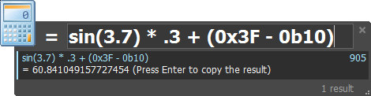

5.4. Calc Package¶
Available since version 2.0
The Calc package allows to quickly evaluate a mathematical expression directly from Keypirinha and eventually copy its result to the clipboard. It also offers base conversion of integers (hexadecimal, binary, octal) and currency formatting.
5.4.1. Catalog Items¶
This package populates the Catalog with the following items:
- The
=item, which argument is expected to be the mathematical expression to evaluate.
Tip
- You do not need to use the
=item to start typing your mathematical expression. This plugin allows to you to enter it directly and it will be evaluated as long as its syntax is valid. - It is also possible to prefix your expression with the
=keyword to indicate the plugin you wish the trailing part to be evaluated in case thealways_evaluateoption is disabled.
5.4.2. Configuration¶
This package is configurable, more details about every setting can be found in its configuration file.
See also
The Configuration chapter
5.4.3. Mathematical Expression¶
To some extent, Calc tries to support any mathematical expression supported by the Python language. Some functions also have been added.
5.4.3.1. Quick Examples¶
1 + 2-1 + 2(prefix sign)sin(2)(function)sin(2.345) + 1.09(floating point)pi(some constants are pre-defined)(3+4)*2(parentheses are supported)3^3or3**3(power of)2k(number suffix; see section below)0xa(hexadecimal numbers will be converted to decimal)0b100(binary numbers will be converted to decimal)0o3(octal numbers will be converted to decimal)0b100 * 0x2(hexadecimal and binary numbers can be used in operations as well)Bitwise operators:
1 << 2(left shift)10 >> 1(right shift)1 & 2(AND)1 | 2(OR)1 ~ 2(XOR)
5.4.3.2. Predefined Constants¶
| Name | Value / Meaning |
|---|---|
pi |
See Python’s math.pi |
e |
See Python’s math.e |
inf |
See Python’s math.inf (Infinity) |
nan |
See Python’s math.nan (Not A Number) |
ans |
The result of the last valid operation Reset to zero at Keypirinha‘s startup or when the package is reloaded |
5.4.3.3. Number Suffixes¶
To ease input, it is possible to specify a multiple of a number by its
name.
Example: 1Ki is equal to 1024.
Warning
Suffixes are case-sensitive which means Ki is not equivalent to
ki.
This package supports the following suffixes:
Metric System:
| Suffix | Name | Expands to |
|---|---|---|
y |
yocto | n / 1000 ** 8 |
z |
zepto | n / 1000 ** 7 |
a |
atto | n / 1000 ** 6 |
f |
femto | n / 1000 ** 5 |
p |
pico | n / 1000 ** 4 |
n |
nano | n / 1000 ** 3 |
u |
micro | n / 1000 ** 2 |
m |
milli | n / 1000 |
c |
centi | n / 100 |
d |
deci | n / 10 |
da |
deca | n * 10 |
h |
hecto | n * 100 |
k |
Kilo | n * 1000 |
M |
Mega | n * 1000 ** 2 |
G |
Giga | n * 1000 ** 3 |
T |
Tera | n * 1000 ** 4 |
P |
Peta | n * 1000 ** 5 |
E |
Exa | n * 1000 ** 6 |
Z |
Zetta | n * 1000 ** 7 |
Y |
Yotta | n * 1000 ** 8 |
Orders of Magnitude of Data:
| Suffix | Name | Expands to |
|---|---|---|
Ki |
Kibi | n * 1024 |
Mi |
Mebi | n * 1024 ** 2 |
Gi |
Gibi | n * 1024 ** 3 |
Ti |
Tebi | n * 1024 ** 4 |
Pi |
Pebi | n * 1024 ** 5 |
Ei |
Exbi | n * 1024 ** 6 |
Zi |
Zebi | n * 1024 ** 7 |
Yi |
Yobi | n * 1024 ** 8 |
5.4.3.4. Core Functions¶
abs |
See Python’s abs() |
bin |
See Python’s bin() |
bool |
See Python’s bool() |
chr |
See Python’s chr() |
divmod |
See Python’s divmod() |
float |
See Python’s float() |
hex |
See Python’s hex() |
int |
See Python’s int() |
len |
See Python’s len() |
min |
See Python’s min() |
max |
See Python’s max() |
oct |
See Python’s oct() |
ord |
See Python’s ord() |
pow |
See Python’s pow() |
round |
See Python’s round() |
str |
See Python’s str() |
5.4.3.5. Math Functions¶
acos |
See Python’s math.acos() |
acosh |
See Python’s math.acosh() |
asin |
See Python’s math.asin() |
asinh |
See Python’s math.asinh() |
atan |
See Python’s math.atan() |
atan2 |
See Python’s math.atan2() |
atanh |
See Python’s math.atanh() |
ceil |
See Python’s math.ceil() |
cos |
See Python’s math.cos() |
cosh |
See Python’s math.cosh() |
deg |
See Python’s math.degrees() |
exp |
See Python’s math.exp() |
factor |
See Python’s math.factorial() |
floor |
See Python’s math.floor() |
gcd |
See Python’s math.gcd() |
hypot |
See Python’s math.hypot() |
log |
See Python’s math.log() |
rad |
See Python’s math.radians() |
sin |
See Python’s math.sin() |
sinh |
See Python’s math.sinh() |
sqrt |
See Python’s math.sqrt() |
tan |
See Python’s math.tan() |
tanh |
See Python’s math.tanh() |
5.4.3.6. Random Functions¶
rand |
Usage: rand(top) Returns an integer below top. |
rand1 |
See Python’s random.random() |
randf |
See Python’s random.uniform() |
randi |
See Python’s random.randint() |